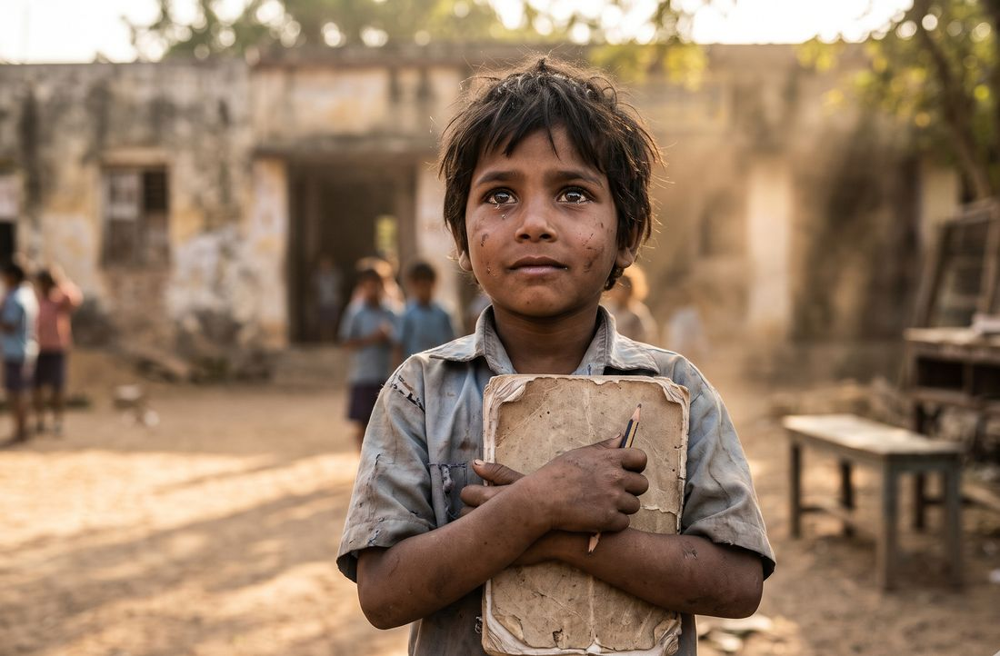
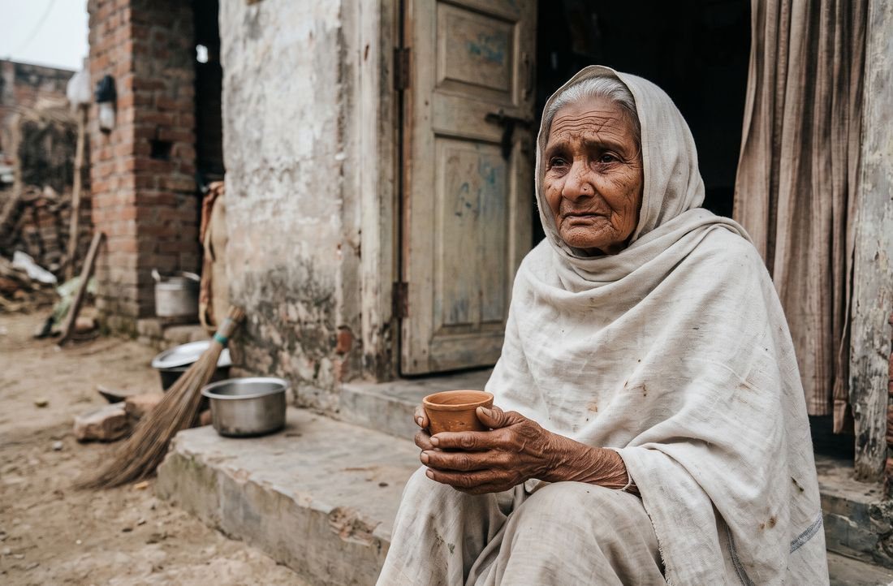
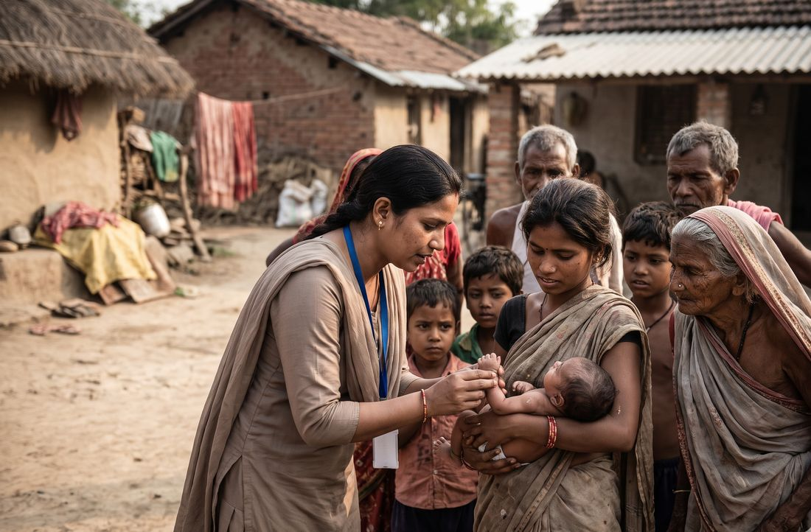

SC
sugatta care @sugattacarefoundation
Sugatta Care FoundationFrom wounds to wonders. Health, dignity and learning for rural families, children and elders in Jind, Haryana.
sugattacarefoundation.com
28posts
1.2Kfollowers
184following
♥
✚
✦
₹
▦ POSTS▣ REELS♙ TAGGED


